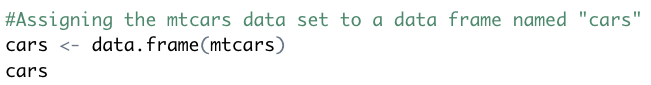
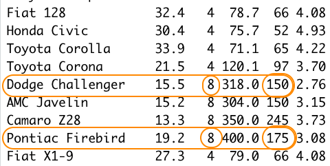
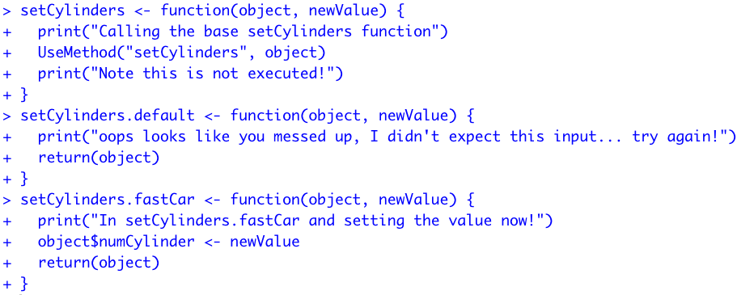
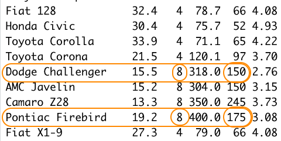
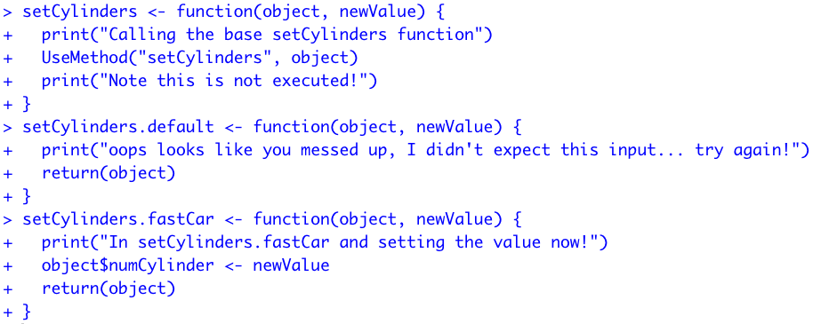
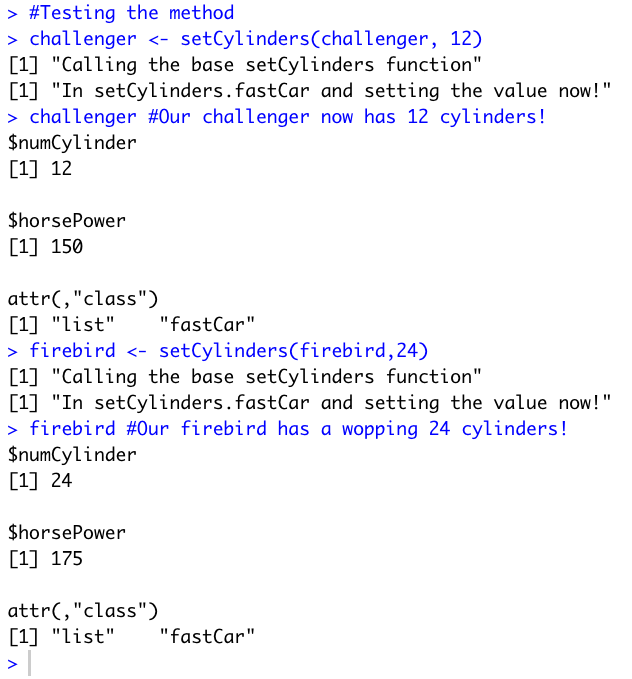
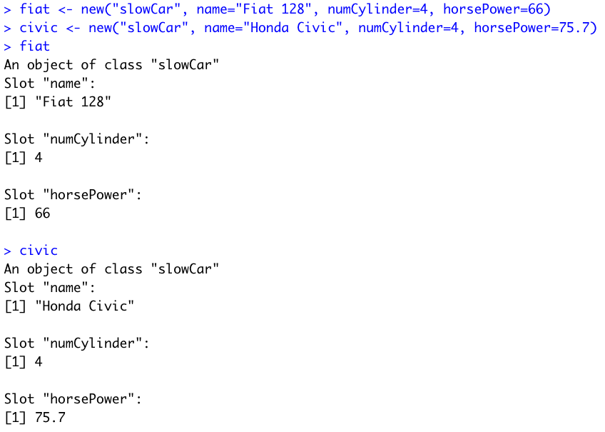
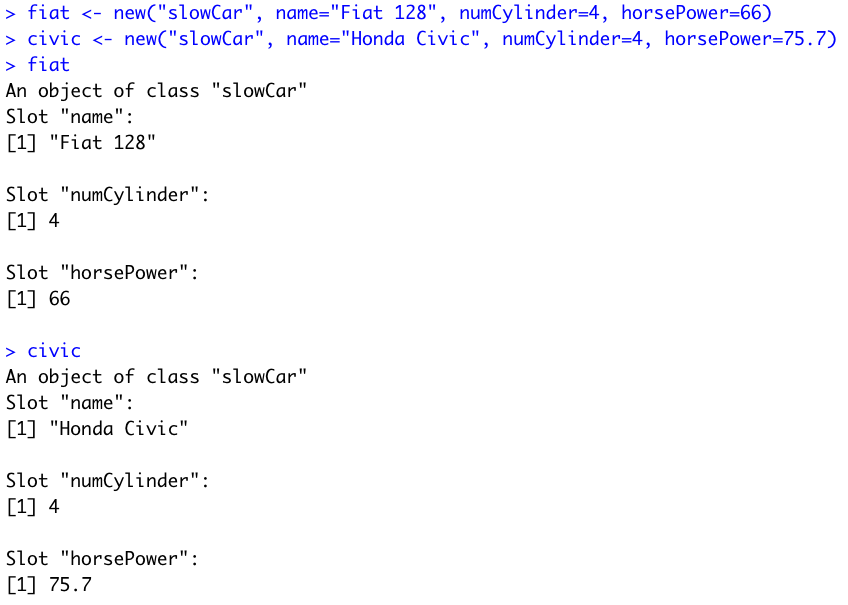
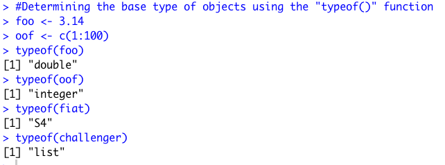
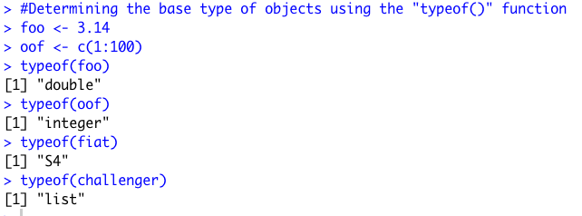

Module 07: S3 and S4 Object-Oriented Programming in R
--February 27th, 2021--
This week's module was very interesting, I enjoy using the OOP S3 and S4 systems and am excited to see how
they can be used to supplement data analysis and package creation.
I decided to use the mtcars data set, included in R by default. I assigned it to a data frame
named "cars" for convenience.

Next I used some generic S3 functions on the dataset.
 I then created a function "fastCar" to create objects using data from the mtcars data set of the class "fastCar".
I then created a function "fastCar" to create objects using data from the mtcars data set of the class "fastCar".
 I created two objects for this class using the function.
I created two objects for this class using the function.
 You can see that both of these objects are of class "fastCar", and checking with the mtcars data set, you can see
that these objects correctly represent the two cars named "Dodge Challenger" and "Pontiac Firebird".

Next I created a method for this S3 class to change the number of cylinders assigned to objects.

It required the creation of three different functions. A generic function with the required "UseMethod" function embedded within it, a default function to run when
R can't locate a proper class to run the function on, and a function telling R what to do when the generic function is called on an object of class "fastCar".
You can see that both of these objects are of class "fastCar", and checking with the mtcars data set, you can see
that these objects correctly represent the two cars named "Dodge Challenger" and "Pontiac Firebird".

Next I created a method for this S3 class to change the number of cylinders assigned to objects.

It required the creation of three different functions. A generic function with the required "UseMethod" function embedded within it, a default function to run when
R can't locate a proper class to run the function on, and a function telling R what to do when the generic function is called on an object of class "fastCar".
I then used the new class method "setCylinders" on the two previously created S3 objects "Challenger" and "Firebird" to give them a ridiculous number of engine cylinders.

Moving on to S4 classes and objects, I defined a function that generates objects of the class "slowCar". I also checked to make sure this function was considered to be S4, using the
isS4() function.
 I then used the new() function to create two new objects of the newly defined "slowCar" class. I chose the "Fiat 128" and "Honda Civic" cars from the mtcars data set.

Once again checking with the mtcars dataset, you can see that the names, number of cylinders, and horsepower are all accurate.
I then used the new() function to create two new objects of the newly defined "slowCar" class. I chose the "Fiat 128" and "Honda Civic" cars from the mtcars data set.

Once again checking with the mtcars dataset, you can see that the names, number of cylinders, and horsepower are all accurate.
 I then defined a method for this S4 class "slowCar" for the generic "show()" function that operates in the background whenever the name of an object is typed into the console.
I proceeded to test the method with the two created objects "fiat" and "civic". The function prints out the details of each object in nicely formatted sentences.
I then defined a method for this S4 class "slowCar" for the generic "show()" function that operates in the background whenever the name of an object is typed into the console.
I proceeded to test the method with the two created objects "fiat" and "civic". The function prints out the details of each object in nicely formatted sentences.
 Next I tried manual reassignment of the "horsePower" slot for the "fiat" object, making it's horsepower 300.
Next I tried manual reassignment of the "horsePower" slot for the "fiat" object, making it's horsepower 300.

Now to answer the four questions posed in the assignment on Canvas.
1. You can tell what object-oriented system an object is associated with by using the isS4() function,
with the object in question as the argument. I tested the S3 object "challenger" and the S4 object "fiat" with the
function. Remember that the "challenger" object was created with an S3 function, and the "fiat" object was created with an S4 function.
 2. You can determine the base type of an object using the "typeof()" function in R. Some examples are below. Notice that the
"fiat" object is considered S4, while the "challenger" object is considered a "list", not S3.

3. A generic function in R is like a multi-purpose operator that changes how it works depending on what class of object it is faced with.
It can be altered to use an unlimited number of different objects, as long as it has instructions on how to use each object. In this week's assignment,
generic functions were used multiple times.
2. You can determine the base type of an object using the "typeof()" function in R. Some examples are below. Notice that the
"fiat" object is considered S4, while the "challenger" object is considered a "list", not S3.

3. A generic function in R is like a multi-purpose operator that changes how it works depending on what class of object it is faced with.
It can be altered to use an unlimited number of different objects, as long as it has instructions on how to use each object. In this week's assignment,
generic functions were used multiple times.
In the S3 examples, I defined a new generic function that only knows how to use one class of objects, "fastCar". This
generic function can be expanded upon to use other classes of objects if needed. In the S4 example, I added a method to the generic function "show()" to tell the
function exactly what to do when using an object of class "slowCar".
4. The main differences between S3 and S4 object oriented programming in R : S4 classes are formally defined, and objects associated with them are classified in R as belonging to them.
Objects associated with S3 classes are recognized by R as lists with an attribute of the S3 class. S4 has something called "multiple dispatch", which allows the generic functions to determine which
methods to use based on multiple arguments, rather than S3, which only views the first argument of a generic function to determine which method to use.
This results in fewer user errors when using a package written with S4 classes and methods.
All-in-all, S4 is a more stable format for creating packages in R.
This last question was tricky, I used this webpage for help:
As always the compiled R file can be found below, and all of the files can be found on my Github page.